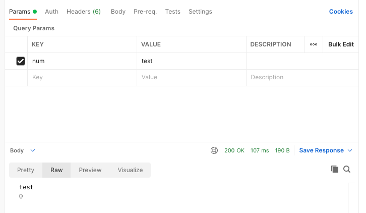

web89
PHP Version: 7.4.2
考点
- 请求参数可为数组
做题
我们将它的代码复制下来再修改一下，好好折磨折磨
1 |
|


如果随便输入一个单词，那么判断条件 intval 将会为 0；但如果在单词中夹入数字，会被preg_match过滤。
但事实上，$_GET 里面这个 num 参数是可控的，它不仅仅可以是 int 或者 string， 还可以是 array。当 $num 为 array 时， preg_match 将无法发挥作用，并且 intval 在传入参数为数组时始终返回 1。通过下面代码进行测试
1 | echo intval(array("m2222" => "a1111", "m223322" => "a1111")); // 1 |
所以，只要传入参数中 key 为数组，具体实现方式为变量后面添加 [] ，就可以绕过正则判断，同时还能使 intval 始终为 1。得以拿到flag。
web90
PHP Version: 7.3.11
考点
- 利用进制不同来绕开强类型判断
- 利用 intval 去掉小数点获得flag
- 利用 %00 截断参数
- 在数字后面添加任意字母拿到的都是数字
- 利用字符隔断某整数之后的数字
做题
我特意去翻了翻 intval 相关的参数代表着什么（https://www.runoob.com/php/php-intval-function.html），发现其中一句话写的就是
如果 base 是 0，通过检测 var 的格式来决定使用的进制：
如果字符串包括了 “0x” (或 “0X”) 的前缀，使用 16 进制 (hex)；否则，
如果字符串以 “0” 开始，使用 8 进制(octal)；否则，
将使用 10 进制 (decimal)。
好家伙，送分。
这题n个思路m个答案，
- 十六进制的4476为
0x117c，直接写入请求参数即可。（适用于 web92） - 另一种是8进制，写入
010574。（适用于 web92, web93） - 还有一种是利用它整数性质，intval会将小数点去掉，参数写入
4476.*即可获得flag。（适用于 web92, web93） - 还有一种方法是在4476后面加入
%00，成功绕过强类型判断 - 还有一种方法是在4476后面加乱七八糟的东西，应该和上一个原理差不多，比如
4476你爱我，我爱你，蜜雪冰城甜蜜蜜 - 对于 web94 ，第三个条件为判断0的位置，如果不存在0或者存在0放在第一个都会die，那就加一个符号将它隔断，比如
4476;0
web91
PHP Version: 7.3.11
做题
1 | if(preg_match('/^php$/im', $a)){ |
两个判断最大的区别就是一个是 /im ， 一个是/i。我特地去查了一下这两个究竟有啥区别
i modifier: insensitive. Case insensitive match (ignores case of [a-zA-Z])
m modifier: multi line. Causes ^ and $ to match the begin/end of each line (not only begin/end of string)
于是我在自己环境尝试替换了一下变量
1 | //$a=$_GET['cmd']; |
结果不进下一个变量了。究其原因关键可能还在于这个 ^和$，也就导致它一行字符串只能出现 php，而 /im 允许出现多行， /i 只能在一行上出现，php\nphp满足了两行字符串均为php，而无法满足在一个字符串内全为php的条件。当然，这个$a可不能直接当参数，还得 urlencode 一下，最后结果为 php%0Aphp
web92~web94
见 web90
web95
PHP Version: 7.3.11
兼容 web90, web92~web94, web95
做题
这题中第一个判断条件使用了弱类型判断，隔绝了在4476后面加任意字符串的做法。
同时在第二个判断条件使用了小数点和字母判断，隔绝了使用小数或者十六进制的做法。
在第三个判断条件引入了判断0的位置，看似隔绝了八进制的做法，因为八进制的0是在第一个的，也就是位置为0，判断时0是false。
但是，我没想到八进制的0还可以不在第0位，只要在前面加个+或者空格就行。
使用 010574 或者+010574 即可获得flag
1 | if($num==4476){ |
web96
PHP Version: All
考点
- 绝对路径绕过
做题

随便输点东西可以获得其绝对路径 /var/www/html，然后将参数替换为 /var/www/html/flag.php即可获得flag。
web97
PHP Version: All
考点
- 简单的 md5 碰撞
做题
参考资料：https://blog.csdn.net/qq_19980431/article/details/83018232
因为判断条件中等于号为强类型判断，所以原有的 a:QNKCDZO b:s878926199a 就不好用了。
但是利用上面的，请求参数是可以放一个数组的，我们尝试一下放一个数组会怎样，我们写一个简单的 PHP 程序来测试
1 |
|


1 | PHP Warning: md5() expects parameter 1 to be string, array given in /Users/kelly/Documents/Program/PHP/CTFShow/web97.php on line 2 |
经过简单调试后，我们发现 md5() 一个数组的话，会抛出异常，同时赋值的变量也会变为null。再看其中一个判断条件，md5($_POST['a']) === md5($_POST['b'])
巧了吗不是，null==null，所以我们只需要在a参数和b参数上分别填上两个数组即可拿到flag。
web98
PHP Version: All
考点
- 指针
做题
我们来分析一下这个代码
1 |
|
首先看highlight_file 这个最关键的，这个 $flag 应该就是从 flag.php 中拿出来的 flag，所以关键的就是要修改 $_GET[‘HTTP_FLAG’] 的值，来让它引入 $flag 从而产生报错。
方法一
改POST为GET。我们可以看到，第一行中的 $_GET 就足以产生影响。所以我们可以先构造 POST 的参数为 HTTP_FLAG，再随便写一个 GET 参数，这样就可以看到报错信息拿到flag了。

方法二
先将参数改POST为GET，再改为COOKIE。
由于第一步有一个置换 $_GET 的过程，也就是说你想修改 $_GET 变量就必定会执行 $_GET?$_GET=&_POST:'flag';，所以要使下一行$_GET['flag']=='flag'?$_GET=&$_COOKIE:'flag';生效，POST的参数就必须有 flag:flag ，同时 $_COOKIE['HTTP_FLAG']=='flag'
最后curl请求为
1 | curl --location --request POST 'http://09063fa0-4302-4c56-aa44-ce9b71e4eb40.challenge.ctf.show:8080/?flag=flag' \ |
方法三
套娃，先将参数改POST为GET，再改为COOKIE，再改Header。
前两步和之前一样，cookie改为 flag=flag，同时再在请求头加入 flag=flag，最后curl请求为
1 | curl --location --request POST 'http://09063fa0-4302-4c56-aa44-ce9b71e4eb40.challenge.ctf.show:8080/?flag=flag' \ |
web99
PHP Version: All
做题
说实话，我真没搞懂这个要干啥，因为尝试了一下 233.php 加一句话木马就可以了。。。
然后我丢到 phpstorm 调试了一下，哦感情这是抽卡呢…
其实主要是因为这个for循环的范围太广了， $i=36; $i < 0x36d; $i++ 一共可以插800多个，运气好可以插到小数点和php的ascii码。不行就多试几次
参数如下
1 | curl --location --request POST 'http://2da731a5-dc75-499b-ae8f-ac7202e78130.challenge.ctf.show:8080/?n=233.php' \ |
然后丢到 AntSword 里面看一下，里面有个 flag36d.php，打开就能拿到flag。